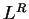

Again, the result of the to-the-power operator (), with an ID equal to L.ID R.ID is pushed on the VMS using the code:
Expr(L,R) {return L^R}; /* Compute the value for
ComputeResult(L,R,Expr); the power operator */
The partial derivative of the expression with respect to the common
variable (here ![\begin{displaymath}
{\partial \over {\partial
x}}\left(f(x,a)^{g(x,b)}\right)=f(...
...x} + \log(f(x,b))
{\partial g(x,b) \over \partial x} \right]
\end{displaymath}](img55.png) |
(4) |
Expr(L,R,dxL,dxR) {return (L^R)*((R/L)*dxL + log(L)*dxR)};
dCommonVar(L,R,Expr);
The partial derivatives with respect to the non-common set of IDs
correspond to
LExpr(L,R,dx) {return R*(L^(R-1))*dx};
RExpr(L,R,dx) {return (L^R)*log(L)*dx};
dNoncommonVar(L,R,LExpr,RExpr);
At the terminal operators (e.g. the assignment operator '='), a
single value (the result of the right hand side of the terminal
operator) is poped from the VMS. The propagated error is then
computed using the values from the top of all DSs corresponding
to the IDs in the ID list of the poped value. The values from these
DSs are the partial derivatives of the expression with respect
to the various independent variables used in the expression on the
right hand side (